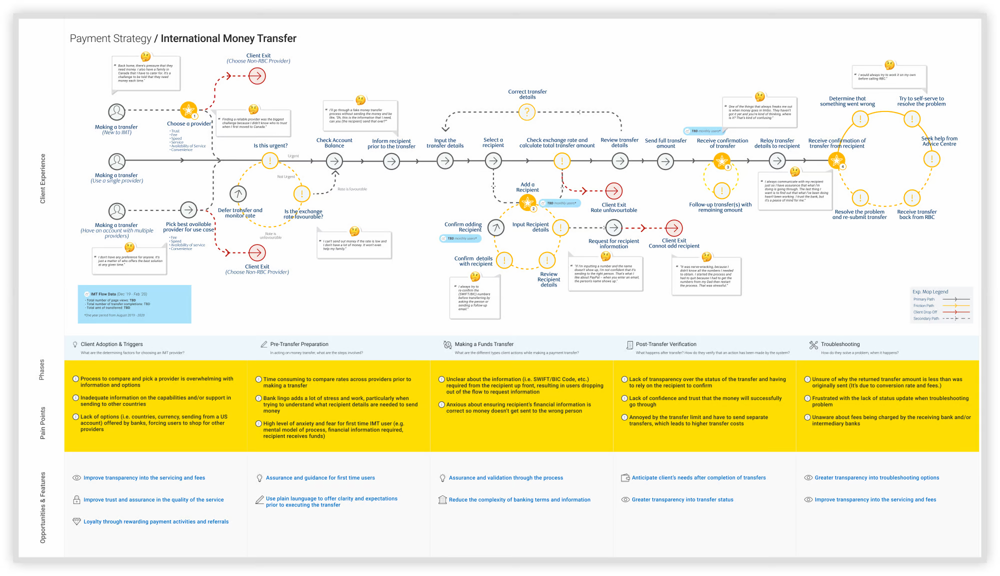
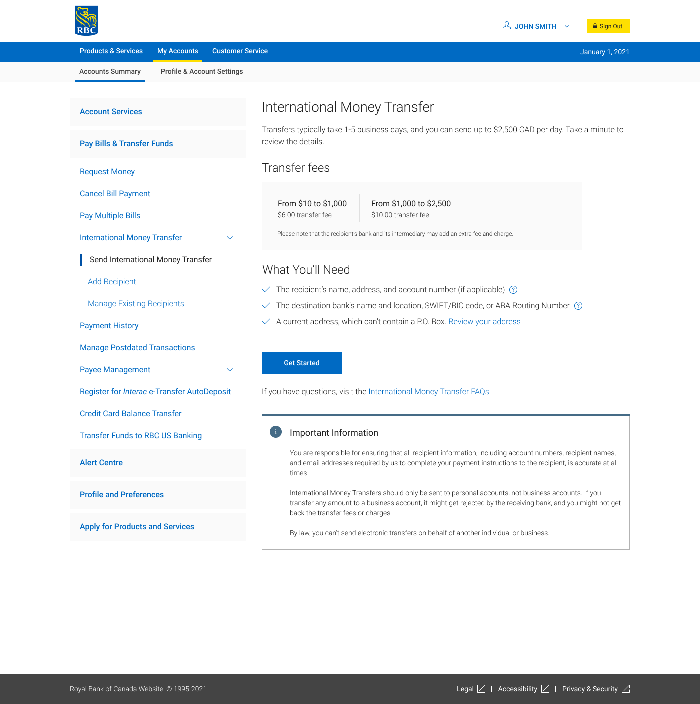
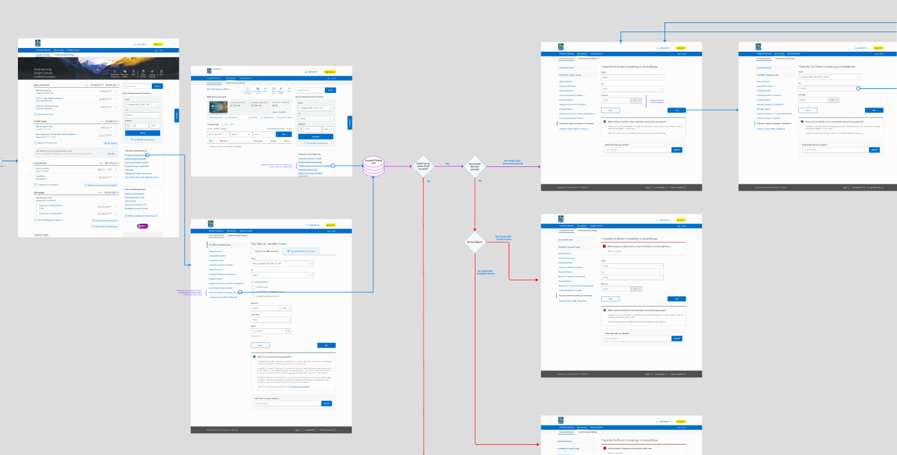
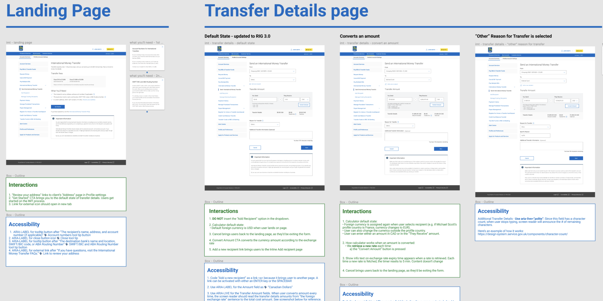
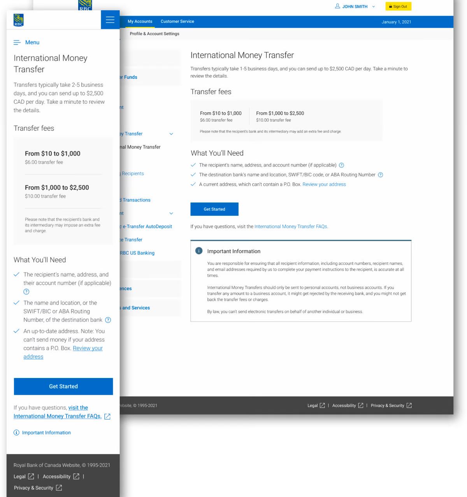
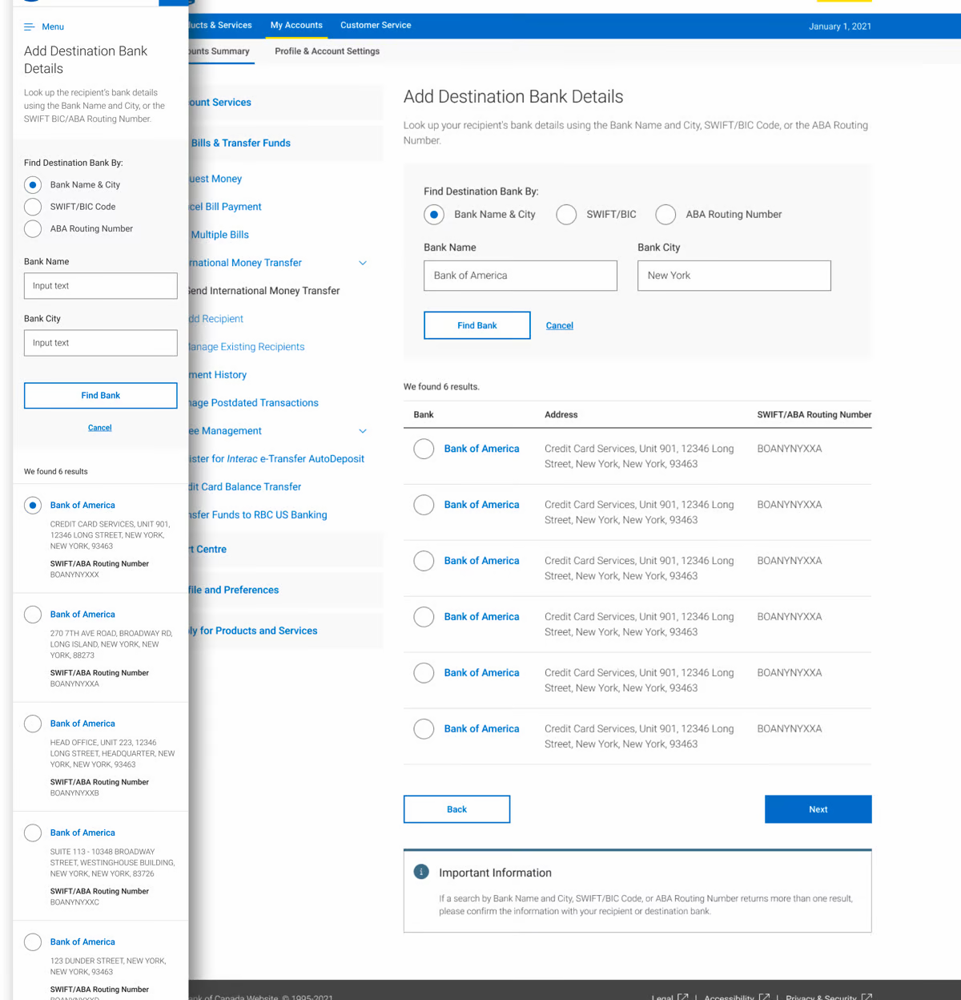

CX & Data Analytics
Starting with what the numbers — and our Advice Centre calls — already told us.
Using data to identify the problem areas
To identify the key problems so we could prioritize accordingly within the tight timeline, I first began by looking through Google Analytics and our Advice Centre call data.
From that, I could identify:
- Where the drop-offs were happening in the flow
- The most common complaints and inquiries from our clients to the Advice Centre
- Which of those problems were actually fixable through design

"It is not transparent as to what the fees are or who charged them. It's a guessing game and I sometimes don't know where to find them."
— Client Feedback from Advice Centre, 2020User Research — Key Insights
Data surfaces what. Research explains why.
But, research tells us the full story
The data we had gave us a focus area and allowed us to formulate hypotheses. However, through our research alignment workshop, we had additional questions and assumptions that we needed to validate.
With the support of our Design Researcher, we conducted 15 interviews — with RBC and non-RBC Clients — to understand their experience of sending money abroad. Pairing user insights with the data we have, we can sum up the key problem areas of IMT:
Adding a new recipient is the biggest pain point
Not knowing what to expect leads to some clients doing a "trial run" to feel more prepared. The feeling of money going in limbo also causes a lot of anxiety.
First time experience is nerve-wracking
First time senders were nervous and intimidated by the experience largely due to fear of mistakes, unfamiliar language, bank terminology, and missing information (i.e. recipient details).
Sender has to monitor transfer status with their recipient
The feeling of money going in limbo causes anxiety. Senders are left to continuously check in with their recipients to ensure they've received the money.

"I'll go through a fake money transfer process without sending the money and be like, 'Oh, this is the information that I need, can you (the recipient) send that over?'"
— Client Research, 2020Design Prioritization
Focus effort where the impact-to-effort ratio is highest.
Prioritize design efforts in high-impact areas
Knowing what we now know about our clients and their pain points, I prioritized our efforts on the areas that could bring the most impact to our clients and reduce the drop-off rate:
Improve fee transparency and set expectations upfront with the information a sender needs and what to expect.
Break down the overloaded single-page form into digestible steps to reduce cognitive load for first-time senders.
Eliminate banking jargon and provide guidance on fields where recipients typically get confused (SWIFT, IBAN, routing).
User Flow
Mapping the happy path — and every branch off it — before opening Figma.
New experience to reduce information overload
Working with the tech team to understand backend constraints helped me understand feasibility. I proposed to the product team that we break out certain parts of the pages into standalone pages so that we could reduce the user's mental load.
Throughout this exploration process, I had frequent check-ins with my Product Owner and Business Analyst and aligned on the user flow prior to doing extensive design exploration.

Design Exploration & Iteration
Solving one problem area at a time so we could ship, measure, and iterate.
Problem area by problem area
With the go-ahead to separate some parts, I hosted a few brainstorming sessions with my design counterparts. Each session was focused on a specific problem area — Landing page, Currency conversion page, Bank Lookup Page — with listed constraints, requirements, and user problems laid out.

Conclusion & Final Designs
The parts that shipped, and the reasoning behind them.
Conclusion
This project was a great example of how valuable it is to conduct client interviews prior to designing. It surfaced opportunity areas we hadn't considered previously — most notably the first-time sender experience. Working within back-end constraints, I was very proud of the updates we could make to the IMT experience.
There were other opportunity areas we wanted to explore but couldn't due to project constraints:
- Transfer status: Provide transparency of the transfer status in-flight so senders don't have to ping their recipients.
- Product competitiveness: Through competitive research and client research, RBC would need to lower cost, increase transfer limit, and/or improve transfer speed to compete with providers like PayPal, Remitly, etc.
Final Designs

Landing Page improvement: Improved fee transparency
Setting expectations upfront with information that a sender would need and what to expect — total cost, exchange rate, and timing surfaced on entry instead of buried at confirmation.

Add Recipient Improvement
Reduce the client's mental load by breaking up the Add Recipient flow into three focused pages:
- Add Recipient Detail
- Add Destination Bank Details
- Delivery Options
Results — Design Impact 🎉
Measured post-launch, attributable to the three shipped problem areas.
Increase in completed transfers
The number of completed transfers went from 10% to 38%. Our streamlined solution helps users move through the experience easily.
Decrease in drop-off rate
Drop-off rates decreased from 80% to 38%. By providing contextual support and improving fee transparency, users are guided through the experience with less friction.
Bonus — Ways of Working
The lasting artifact this project produced wasn't just pixels — it was a better process.
Research standardization and design hand-off upgrade 💪🏻
In the past few projects, I'd come to realize how little design documentation the team had. Things change so often that without documentation, how do we keep track of decisions?
One of the things we changed through this project was writing development stories. I worked closely with our BA to document design requirements that include interactions (e.g. browser back behaviour) and, most importantly, accessibility.
Additionally, because of how complex this IMT experience is, I laid out the experience flow showing the different error states, alt paths, and the happy path. It became the single source of truth referenced by devs and the BA, who also used it for GA tagging.

